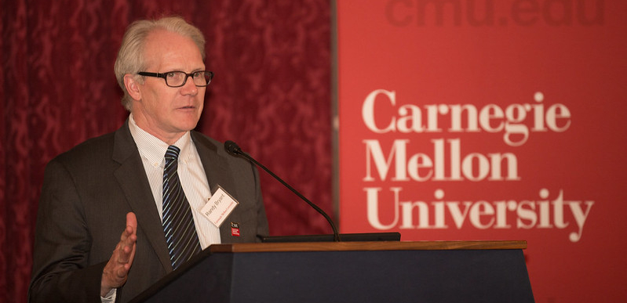
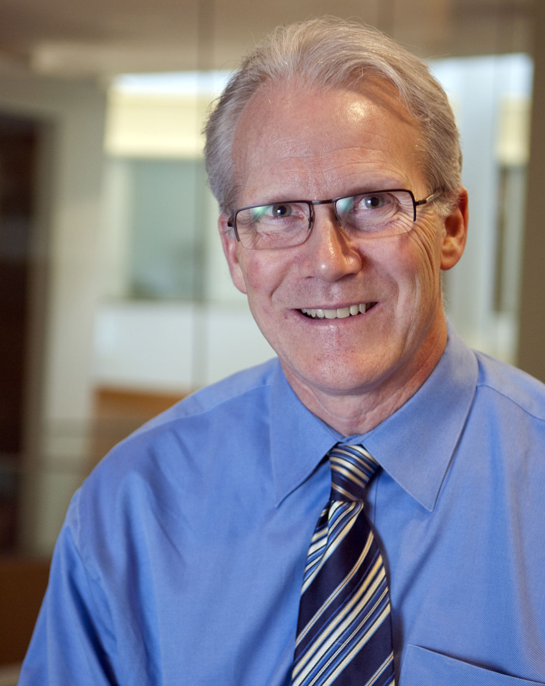

@FLoC'22
Bryant Discoveries Day@FLoC'22: Celebrating the Career and Professional Achievements of Prof. Randal E. Bryant



| Speaker |
Affiliation |
| Nikolaj Bjorner |
Microsoft Research |
| Bob Brayton |
University of California, Berkeley |
| Randy Bryant |
Carnegie Mellon University |
| David Dill |
Meta |
| Aarti Gupta |
Princeton University |
| Shuvendu Lahiri |
Microsoft Research |
| Sharad Malik |
Princeton University |
| Ken McMillan |
University of Texas, Austin |
| Shin-Ichi Minato |
Kyoto University |
| Carl Seger |
Chalmers University of Technology |
| Sanjit Seshia |
University of California, Berkeley |
| Fabio Somenzi |
University of Colorado, Boulder |
| Willem-Jan van Hoeve |
Carnegie Mellon University |
| Moshe Vardi |
Rice University |
|
|
Aarti Gupta
Princeton University
Shuvendu Lahiri
Microsoft Research
Kenneth McMillan
The University of Texas at Austin
Sanjit A. Seshia
University of California, Berkeley
Ofer Strichman
Technion - Israel Institute of Technology
|